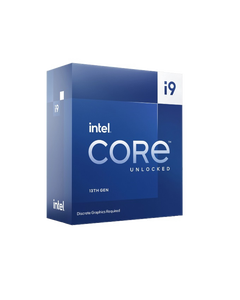
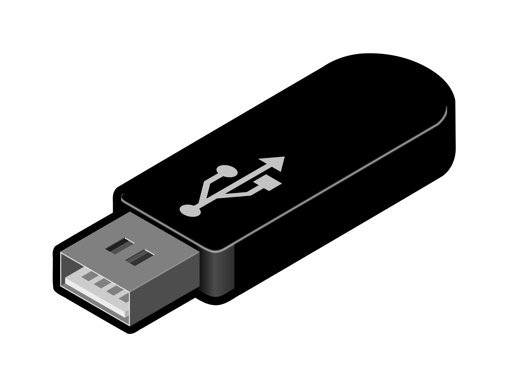
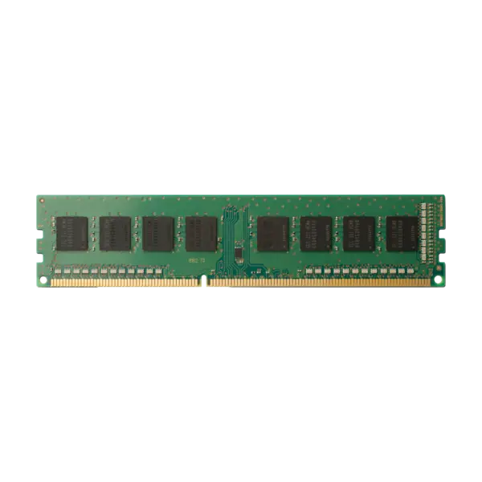
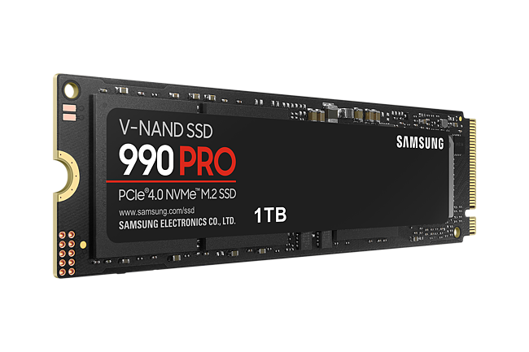

William Tage Legolas Danielsson
| Om mig | Webb Historia | Uppgifter | Photoshop | Artist | Min hobby | Teknik |
|  |
ProcessorProcessorn är hjärtat i din dator och ansvarig för att utföra alla beräkningar. En kraftfull processor kan förbättra prestandan i dina datoruppgifter och spel. |
USB-enheterUSB (Universal Serial Bus) är en vanlig gränssnittsstandard för att ansluta olika enheter till din dator, som USB-minnen, tangentbord, och mus. |
 |
|  |
RAM-minneRAM (Random Access Memory) är en snabb typ av datalagringsenhet som används för att lagra temporära data och program med snabb åtkomst för din dator. |
SSD-enheterSSD (Solid State Drive) är en modern lagringsenhet som ersätter traditionella hårddiskar med snabbare och pålitligare lagringsteknik. |
 |

|
GrafikkortEtt kraftfullt grafikkort är viktigt för att spela avancerade spel och bearbeta grafikintensiva uppgifter. Det ansvarar för att generera bilder och grafik på din skärm. |